Содержание
Эта и последующие главы описывают модель визуального форматирования: то как пользовательские агенты (ПА) обрабатывают дерево документа для визуального носителя.
В модели визуального форматирования каждый элемент дерева документа генерирует ноль или более боксов в соответствии с моделью боксов. Структура этих боксов управляется:
Свойства, определённые в этой и следующих главах, применяются и к непрерывным носителям, и к страничным носителям. В то же время, значения свойств полей варьируются при использовании со страничным носителем (см. в страничной модели).
Модель визуального форматирования не определяет все аспекты форматирования (например, она не специфицирует алгоритм расстояний между буквами). Поведение соответствующих ПА может отличаться в вопросах форматирования.
ПА для непрерывных носителей обычно предлагают пользователю порт просмотра (окно или другую область просмотра на экране), в котором пользователь видит документ. ПА могут изменять внешний вид документа, если порт просмотра изменил размеры (см. начальный содержащий блок). Если порт просмотра меньше, чем начальный содержащий блок документа, ПА должен предоставить механизм прокрутки. Имеется не менее одного порта просмотра в канве, но ПА могут отображать более чем одну канву (т.е. предоставлять различные виды того же самого документа).
В CSS2 многие варианты позиционирования и размеры вычисляются относительно кромки прямоугольного бокса, называемого содержащий блок. Обычно генерируемые боксы действуют как содержащие блоки для боксов-потомков; мы говорим, что бокс "устанавливает" содержащий блок для своих потомков. Фраза "блок, содержащий бокс" означает "блок, в котором бокс находится", а не блок, генерирующий бокс.
Каждый бокс имеет позицию относительно содержащего блока, но не ограничен этим блоком и может вызвать переполнение.
Корневой элемент дерева документа генерирует бокс, который служит начальным содержащим блоком для последующего вывода.
Ширина начального содержащего блока может быть специфицирована свойством 'width' корневого элемента. Если это свойство имеет значение 'auto', ПА предоставляет начальное значение ширины (например, ПА использует текущую ширину порта просмотра).
Высота начального содержащего блока может быть специфицирована свойством 'height' корневого элемента. Если это свойство имеет значение 'auto', высота содержащего блока увеличивается, чтобы приспособиться к содержимому документа.
Начальный содержащий блок не может быть позиционирован или всплывать (т.е. ПА игнорируют свойства 'position' и 'float' корневого элемента).
Детали того, как высчитываются размеры содержащего блока, описаны в следующей главе.
Последующие разделы описывают типы боксов, которые могут генерироваться в CSS2. Тип бокса воздействует отчасти на его (бокса) поведение в модели визуального форматирования. Свойство 'display', описанное ниже, специфицирует тип бокса.
Элементы уровня блока это элементы документа-источника, визуально отформатированные как блоки (например, параграфы). Различные значения свойства 'display' создают элемент уровня блока: 'block', 'list-item', 'compact', 'run-in' (не всегда; см. компактные и втягивающиеся боксы) и 'table'.
Элементы уровня блока генерируют основной бокс блока, и только он содержит боксы блоков. Основной бокс блока устанавливает содержащий блок для боксов-потомков и сгенерированного содержимого и является также боксом, участвующим в любой схеме позиционирования. Основные боксы блока действуют в контексте форматирования блока.
Некоторые элементы уровня блока генерируют дополнительные боксы за пределами основного бокса: элементы 'list-item' и элементы с маркёрами. Эти дополнительные боксы размещаются относительно основного бокса.
В этом документе:
<DIV> Some text <P>More text </DIV>(и приняв, что и DIV, и P оба имеют 'display: block'), DIV имеет содержимое и инлайн-уровня, и уровня блока. Чтобы легче было определить форматирование, мы примем, что вокруг "Some text" имеется анонимный бокс блока.
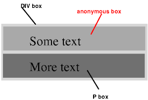 [D]
На диаграмме изображены три бокса, один из которых анонимный, в примере - верхний.
Другими словами: если бокс блока (такой как сгенерированный в DIV выше) имеет внутри себя другой бокс блока (как P), тогда мы заставляем его иметь боксы блока только внутри себя, перенеся любые инлайн-боксы в анонимный бокс блока.
Эта модель будет применена в следующем примере, если данные правила:
/* Примечание: ПАгенты HTML могут не рассматривать эти правила */
BODY { display: inline }
P { display: block }
будут использованы в данном документе HTML:
<!DOCTYPE HTML PUBLIC "-//W3C//DTD HTML 4.0 Transitional//EN"> <HEAD> <TITLE>Анонимный текст, прерываемый блоком.</TITLE> </HEAD> <BODY> Анонимный текст до P. <P>Содержимое элемента P.</> Анонимный текст после P. </BODY>
Элемент BODY содержит отрывок (C1) анонимного текста, после которого идут элемент уровня блока и второй отрывок анонимного текста (C2). В результате получим анонимный бокс блока для BODY, содержащий анонимный бокс блока вокруг C1, бокс блока P и второй анонимный бокс блока вокруг C2.
Свойства анонимных боксов наследуются из содержащего неанонимного бокса (в примере: из DIV). Ненаследуемые свойства имеют свои начальные значения. Например, шрифт анонимного бокса наследуется из DIV, но поля имеют значения 0.
Инлайн-элементы это те элементы документа-источника, которые не образуют новых блоков содержимого; содержимое определяется в строке (на месте) (например, выделенные участки текста внутри параграфа, инлайн-изображения и т.п.). Различные значения свойства 'display' делают элемент инлайн: 'inline', 'inline-table', 'compact' и 'run-in' (не всегда; см. компактные и втягивающиеся боксы). Элементы инлайн-уровня (встроенные) генерируют инлайн-боксы.
Инлайн-боксы могут принимать участие в различных контекстах форматирования:
В таком документе:
<P>Некоторый <EM>выделенный</em> текст.</P>
элемент P генерирует бокс блока с несколькими инлайн-боксами внутри. Бокс для "выделенный" - это инлайн-бокс, сгенерированный инлайн-элементом (EM), но другие боксы ("Некоторый" и "текст") являются инлайн-боксами, сгенерированными элементом уровня блока (P). Последние называются анонимными инлайн-боксами, поскольку они не имеют ассоциированного инлайн-элемента.
Такие анонимные инлайн-боксы наследуют наследуемые свойства своего родительского бокса уровня блока. Ненаследуемые свойства получают свои начальные значения. В примере - цвет анонимных начальных боксов наследуется из P, но фон остаётся прозрачным.
Если из контекста ясно, какой тип анонимных боксов подразумевается, то и боксы инлайн, и боксы уровня блока называются в данной спецификации анонимными боксами.
Имеются и другие типы анонимных боксов, возникающие при форматировании таблиц.
Бокс compact ведёт себя так:
Compact-бокс позиционируется в поле следующим образом: он находится вне (слева или справа от) первого строчного бокса блока, но влияет на расчёт высоты строчного бокса. Свойство 'vertical-align' compact-бокса определяет вертикальную позицию compact-бокса относительно строчного бокса. Позиция compact-бокса по горизонтали - всегда в поле бокса блока.
Элемент, который не может быть отформатирован в пределах одной строчки, не может размещаться в поле последующего блока. Например, элемент 'compact' в HTML, который содержит элемент BR, всегда будет форматироваться как бокс блока (принимая для BR стиль по умолчанию, когда вставляется новая строка). Для размещения многострочного текста в поле часто больше подойдёт свойство 'float'.
Следующий пример иллюстрирует compact-бокс:
<!DOCTYPE HTML PUBLIC "-//W3C//DTD HTML 4.0//EN">
<HTML>
<HEAD>
<TITLE>A compact box example</TITLE>
<STYLE type="text/css">
DT { display: compact }
DD { margin-left: 4em }
</STYLE>
</HEAD>
<BODY>
<DL>
<DT>Short
<DD><P>Description goes here.
<DT>too long for the margin
<DD><P>Description goes here.
</DL>
</BODY>
</HTML>
Этот пример может выглядеть после форматирования так:
short Description goes here
too long for the margin
Description goes here
Свойство 'text-align' можно использовать для выравнивания compact-элемента внутри поля: у левого края поля ('left'), у правого края поля ('right') или по центру поля ('center'). Значение 'justify' не применяется и обрабатывается или как 'left', или как 'right', в зависимости от 'direction'/направления элемента блока, в поле которого форматируется compact-элемент ('left', если направление - 'ltr', 'right', если направление 'rtl').
Информацию о том, как compact-боксы взаимодействуют с генерируемым содержимым, см. в разделе генерируемое содержимое.
Бокс run-in ведёт себя так:
Бокс 'run-in' используется для run-in-заголовков, как в этом примере:
<!DOCTYPE HTML PUBLIC "-//W3C//DTD HTML 4.0//EN">
<HTML>
<HEAD>
<TITLE>Пример бокса run-in</TITLE>
<STYLE type="text/css">
H3 { display: run-in }
</STYLE>
</HEAD>
<BODY>
<H3>Заголовок run-in.</H3>
<P>И параграф текста,
следующий за ним.
</BODY>
</HTML>
Этот пример может форматироваться так:
Заголовок run-in. И параграф текста, следующий за ним.
Свойства run-in-элемента наследуются от родителя в дереве-источнике, а не от бокса блока, частью которого он визуально является.
Информацию о том, как compact-боксы взаимодействуют с генерируемым содержимым, см. в разделе Генерируемое содержимое.
| Значение: | inline | block | list-item | run-in | compact | marker | table | inline-table | table-row-group | table-header-group | table-footer-group | table-row | table-column-group | table-column | table-cell | table-caption | none | inherit |
| Начальное: | inline |
| Применяется: | все элементы |
| Наследуется: | нет |
| Процентное: | N/A |
| Носитель: | все |
Значения этого свойства имеют следующий смысл:
Обратите внимание, что отображение 'none' не создаёт невидимый бокс; боксы вообще не создаются. CSS содержит механизмы, делающие возможным генерацию элементом бокса в структуре форматирования, который влияет на структуру форматирования, но невидим. См. детали в разделе Видимость.
Заметьте, что, хотя начальное значение 'display' - 'inline', правила в таблицах по умолчанию в ПА могут переопределить это значение. См. пример таблицы стилей для HTML 4.0 в приложении.
Несколько примеров свойства 'display':
P { display: block }
EM { display: inline }
LI { display: list-item }
IMG { display: none } /* Не выводить изображения */
Соответствующие ПА HTML могут игнорировать свойство 'display'.
В CSS2 бокс может находиться в разных слоях в соответствии со схемами позиционирования:
Свойства 'position' и 'float' определяют, какой из алгоритмов позиционирования CSS2 используется для расчёта позиции бокса.
| Значение: | static | relative | absolute | fixed | inherit |
| Начальное: | static |
| Применяется: | ко всем элементам, но не к генерируемому содержимому |
| Наследуется: | нет |
| Процентное: | N/A |
| Носитель: | визуальный |
Значения имеют следующий смысл:
@media screen {
H1#first { position: fixed }
}
@media print {
H1#first { position: static }
}
Элемент называется позиционированным, если его свойство 'position' имеет значение, отличное от 'static'. Позиционированные элементы генерируют позиционированные боксы, располагающиеся в соответствии с четырьмя свойствами:
| Значение: | <length> | <percentage> | auto | inherit |
| Начальное: | auto |
| Применяется: | к позиционируемым элементам |
| Наследуется: | нет |
| Процентное: | относительно высоты содержащего блока |
| Носитель: | визуальный |
Это свойство специфицирует, насколько смещён вниз верхний край содержимого бокса относительно верхнего края содержащего блока.
| Значение: | <length> | <percentage> | auto | inherit |
| Начальное: | auto |
| Применяется: | к позиционируемым элементам |
| Наследуется: | нет |
| Процентное: | относительно ширины содержащего блока |
| Носитель: | визуальный |
Это свойство специфицирует, насколько смещён влево правый край содержимого бокса относительно правого края содержащего блока.
| Значение: | <length> | <percentage> | auto | inherit |
| Начальное: | auto |
| Применяется: | к позиционируемым элементам |
| Наследуется: | нет |
| Процентное: | относительно высоты содержащего блока |
| Носитель: | визуальный |
Это свойство специфицирует, насколько смещён вверх нижний край содержимого бокса относительно низа содержащего блока.
| Значение: | <length> | <percentage> | auto | inherit |
| Начальное: | auto |
| Применяется: | к позиционируемым элементам |
| Наследуется: | нет |
| Процентное: | относительно ширины содержащего блока |
| Носитель: | визуальный |
Это свойство специфицирует, насколько смещён вправо левый край содержимого бокса относительно левого края содержащего блока.
Значения для этих четырёх свойств имеют следующий смысл:
Для абсолютно позиционируемых боксов - смещения являются относительными к содержащему блоку бокса. Для относительно позиционируемых боксов - смещения являются относительными к внешним краям самого бокса (т.е. боксу задаётся нормальное расположение, а затем - смещение от этой позиции в соответствии с вышеуказанными свойствами).
Боксы при нормальном обтекании относятся к контексту форматирования, который может быть уровня блока и инлайн, но не тем и другим одновременно. Боксы блока находятся в контексте форматирования блока. Инлайн-боксы находятся в контексте инлайн-форматирования.
В контексте форматирования блока боксы устанавливаются один за другим, вертикально, начиная от верха содержащего блока. Вертикальное расстояние между двумя родственными боксами определяется свойством 'margin'. Горизонтальные поля между смежными боксами блока в контексте форматирования блока сжимаются.
В контексте форматирования блока левый внешний край бокса касается левого края содержащего блока (для форматирования справа-налево - касается правый край). Это верно даже в случае с поплавками (хотя область содержимого может усекаться из-за поплавков).
Информацию о разрывах страниц в страничных носителях см. в разделе допустимые разрывы страниц.
В контексте инлайн-форматирования боксы устанавливаются по горизонтали, один за другим, начиная от верха содержащего блока. Горизонтальные поля, рамки и заполнение рассматриваются как отношения между боксами. Боксы могут быть выровнены по вертикали несколькими способами: могут быть выровнены их нижние или верхние края или базовые линии текста внутри них. Прямоугольная область, содержащая боксы, которые образуют строку, называется строчный бокс.
Ширина строчного бокса определяется содержащим блоком. Высота строчного бокса определяется правилами из раздела вычисление высоты строки. Строчный бокс всегда имеет высоту, достаточную для содержащихся в нём боксов. В то же время, он может быть выше, чем самый высокий из содержащихся в нём боксов (если, например, боксы выровнены так, что базовые линии выстроены). Если высота бокса В меньше, чем высота строчного бокса, содержащего его, то вертикальное выравнивание В внутри строчного бокса определяется свойством 'vertical-align'.
Если несколько инлайн-боксов не входят по горизонтали в один строчный бокс, они распределяются на два или более вертикально упакованных строчных бокса. Таким образом, параграф будет вертикальным стеком из строчных боксов. Строчные боксы упакованы по вертикали без разделения и никогда не перекрываются.
Вообще, левый край строчного бокса касается левого края его содержащего блока, и правый край касается правого края его содержащего блока. В то же время, боксы-поплавки могут появляться между краем содержащего блока и краем строчного блока. Таким образом, хотя строчные боксы в том же самом контексте инлайн-форматирования обычно имеют ту же самую ширину (что и содержащий блок), они могут иметь и другую ширину из-за поплавков, уменьшающих горизонтальное пространство. Строчные боксы в том же самом контексте инлайн-форматирования обычно различаются по высоте (например, одна строка может содержать высокое изображение, а другие строки - только текст).
Если суммарная ширина инлайн-боксов в строке меньше, чем ширина строчного бокса, содержащего их, то их распределение по горизонтали внутри строчного бокса определяется свойством 'text-align'. Если это свойство имеет значение 'justify', ПА может уплотнить инлайн-боксы.
Поскольку инлайн-бокс не может превысить ширину строчного бокса, длинные инлайн-боксы разделяются на несколько боксов, и эти боксы распределяются на несколько строчных боксов. Если инлайн-бокс разделён, то поля, рамки и заполнение не имеют визуального эффекта в тех местах, где происходит разделение. Форматирование полей, рамок и заполнения может не быть определено полностью, если разделение происходит внутри двунаправленного внедрения.
Инлайн-боксы могут также быть разделены на несколько боксов внутри одного строчного бокса из-за двунаправленной обработки текста.
Вот пример конструкции инлайн-боксов. Следующий параграф (созданный элементом Р уровня блока в HTML) содержит анонимный текст, распределённый между элементами EM и STRONG:
<P>Several <EM>emphasized words</EM> appear <STRONG>in this</STRONG> sentence, dear.</P>
Элемент P генерирует бокс блока, содержащий пять инлайн-боксов, три из которых - анонимные:
Чтобы сформатировать параграф, ПА вставляет пять боксов в строчный бокс. В этом примере бокс, генерируемый для элемента P, устанавливает содержащий блок для строчных боксов. Если содержащий блок достаточно широк, все инлайн-боксы войдут в один строчный бокс:
Several emphasized words appear in this sentence, dear.
если нет, инлайн-боксы будут разделены и распределены по нескольким строчным боксам. Предыдущий параграф может быть разделён так:
Several emphasized words appear in this sentence, dear.или так:
Several emphasized words appear in this sentence, dear.
В предыдущем примере бокс EM был разделён на два бокса EM (назовём их "split1" и "split2"). Поля, рамки, заполнение или текстовый орнамент не имеют видимого эффекта после split1 или до split2.
Рассмотри следующий пример:
<!DOCTYPE HTML PUBLIC "-//W3C//DTD HTML 4.0//EN">
<HTML>
<HEAD>
<TITLE>Example of inline flow on several lines</TITLE>
<STYLE type="text/css">
EM {
padding: 2px;
margin: 1em;
border-width: medium;
border-style: dashed;
line-height: 2.4em;
}
</STYLE>
</HEAD>
<BODY>
<P>Several <EM>emphasized words</EM> appear here.</P>
</BODY>
</HTML>
В зависимости от ширины P, боксы могут распределиться так:
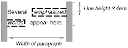 [D]
После того, как бокс расположен в соответствии с нормальным расположением, он может быть сдвинут относительно этой позиции. Это называется относительным позиционированием. Смещение бокса (B1) таким способом не окажет воздействия на бокс (B2), следующий за ним: B2 получит такую позицию, как будто B1 не смещён и B2 не перемещается после применения смещения B1. Это предполагает, что относительное позиционирование может вызывать взаимное перекрытие боксов.
Относительно позиционированные боксы сохраняют свои нормальные размеры и прорисовку, включая разрывы строк и заполнение, первоначально зарезервированные за ними. Относительно позиционированный бокс устанавливает новый содержащий блок для нормальной прорисовки дочерних и позиционированных потомков.
Относительно позиционированный бокс генерируется, когда свойство 'position' элемента имеет значение 'relative'. Смещение специфицируется свойствами 'top', 'bottom', 'left' и 'right'.
Динамическое перемещение боксов, позиционированных относительно, может создавать эффекты анимации в среде скриптов (см. также свойство 'visibility'). Относительное позиционирование можно использовать также как общую форму под- и надиндексов, за исключением того, что высота строки не устанавливается автоматически при рассмотрении позиционирования. См. дополнительно описание вычисления высоты строки.
Примеры относительного позиционирования есть в разделе Сравнение нормального позиционирования, поплавков и абсолютного позиционирования.
Поплавок это бокс, который "всплывает"
(смещается) влево или
вправо на текущей строке. Самое интересное
в поведении поплавка (или "всплывающего",
или "плавающего" бокса) то, что
содержимое может обтекать его по сторонам (или
это может быть запрещено свойством 'clear'). Содержимое обтекает справа бокс,
всплывающий влево, и слева - бокс
всплывающий вправо.
Далее следует введение в позиционирование
поплавков и обтекание содержимого; точные правила, управляющие
поведением поплавков, даны в описании
свойства 'float'.
Всплывающий бокс обязан иметь явно установленную ширину (назначенную свойством 'width', или свою внутреннюю ширину - в случае замещаемых элементов). Любой всплывающий бокс становится боксом блока, который сдвигается влево или вправо, пока его внешний край не коснётся края содержащего блока или внешнего края другого поплавка. Верх всплывающего бокса выравнивается с верхом текущего строчного бокса (или низом предшествующего бокса блока, если отсутствует строчный бокс). Если для поплавка не хватает горизонтального пространства на текущей строке, он сдвигается вниз строка за строкой, пока строка не получит достаточно пространства для него.
Пока поплавок не всплыл, непозиционированные боксы блока, созданные до и после всплывающего бокса, всплывают вертикально, как будто поплавка не существует. Однако строчные боксы, созданные сразу после поплавка, уменьшаются, чтобы дать пространство для всплывающего бокса. Любое содержимое на текущей строке до всплывающего бокса перерисовывается на первой доступной строке с противоположной стороны поплавка.
Несколько поплавков могут быть смежными, и эта модель применяется также к смежным поплавкам на той же строке.
Следующее правило вызывает всплывание влево всех боксов IMG с class="icon" (и устанавливает левое поле в '0'):
IMG.icon {
float: left;
margin-left: 0;
}
Рассмотрим следующие HTML и таблицу стилей:
<!DOCTYPE HTML PUBLIC "-//W3C//DTD HTML 4.0//EN">
<HTML>
<HEAD>
<TITLE>Float example</TITLE>
<STYLE type="text/css">
IMG { float: left }
BODY, P, IMG { margin: 2em }
</STYLE>
</HEAD>
<BODY>
<P><IMG src=img.gif alt="This image will illustrate floats">
Some sample text that has no other...
</BODY>
</HTML>
IMG-бокс всплывает влево. Последующее содержимое форматируется справа от поплавка, начиная с той же строки, где находится поплавок. Строчные боксы справа от поплавка укорачиваются из-за присутствия поплавка, но имеют свою "нормальную" ширину (как в содержащем блоке, установленном элементом P) после поплавка. Этот документ может быть сформатирован так:
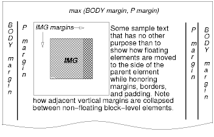 [D]
Форматирование могло бы быть точно таким же, если бы документ был следующим:
<BODY>
<P>Some sample text
<IMG src=img.gif alt="This image will illustrate floats">
that has no other...
</BODY>
поскольку содержимое слева от поплавка замещается поплавком и обтекает его вниз по его правой стороне.
Поля всплывающих боксов никогда не сжимаются полями смежных боксов. Таким образом, в предыдущем примере вертикальные поля не сжимаются между боксом P и всплывающим IMG-боксом.
Поплавок может перекрывать другие боксы при нормальном позиционировании (например, когда нормально позиционированный бокс, следующий за поплавком, имеет отрицательные поля). Когда инлайн-бокс перекрывается поплавком, содержимое, фон и рамки инлайн-бокса отображаются впереди поплавка. Если блок бокса перекрывается, фон и рамки бокса блока отображаются позади поплавка и видны только там, где бокс прозрачен. Содержимое бокса блока отображается спереди от поплавка.
Вот другая иллюстрация, показывающая, что происходит, когда поплавок перекрывает рамки элемента с нормальным всплыванием.
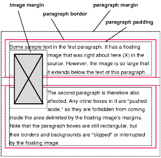 [D]
Всплывающее изображение скрывает рамки перекрываемого бокса блока.
Следующий пример иллюстрирует использование свойства 'clear' для предотвращения всплывания содержимого после поплавка.
При таком правиле:
P { clear: left }
форматирование может выглядеть так:
| Значение: | left | right | none | inherit |
| Начальное: | none |
| Применяется: | ко всему, кроме позиционированных элементов и генерируемого содержимого |
| Наследуется: | нет |
| Процентное: | N/A |
| Носитель: | визуальный |
Это свойство специфицирует, должен ли
бокс всплывать влево, вправо или не
всплывать вообще. Оно может быть
установлено для элементов, генерирующих
боксы, которые не
позиционированы абсолютно.
Значения этого свойства имеют следующий
смысл:
Вот точные правила, управляющие поведением поплавка:
| Значение: | none | left | right | both | inherit |
| Начальное: | none |
| Применяется: | к элементам уровня блока |
| Наследуется: | нет |
| Процентное: | N/A |
| Носитель: | визуальный |
Это свойство указывает, какие стороны бокса(ов) элемента не могут быть смежными с ранее всплывшим боксом. (Может быть такое, что элемент сам имеет всплывающих потомков; свойство 'clear' не оказывает на них воздействия.)
Это свойство может быть специфицировано только для элементов уровня блока (включая поплавки). Для компактных и втягивающихся боксов это свойство применяется к окончательному боксу блока, к которому компактный или втягивающийся бокс принадлежит.
Значения имеют следующий смысл при применении к невсплывающим боксам блока:
Если свойство установлено на всплывающие элементы, результатом будет модификация правил позиционирования поплавка. Прибавляется дополнительное условие (#10):
В модели абсолютного позиционирования бокс смещается явно относительно своего содержащего блока. Он полностью удаляется из нормального позиционирования (не влияет на последующих родственников). Абсолютно позиционированный бокс устанавливает новый содержащий блок для нормально позиционируемых дочерних боксов и позиционируемых потомков. В то же время, содержимое абсолютно позиционированных элементов не всплывает вокруг других боксов. Эти элементы могут или могут не закрывать собой содержимое другого бокса, в зависимости от уровней в стэке у перекрываемых боксов.
Ссылки в данной спецификации на абсолютно позиционированный элемент (или его бокс) подразумевают, что свойство 'position' элемента имеет значение 'absolute' или 'fixed'.
Фиксированное позиционирование это
подкатегория абсолютного позиционирования.
Единственное отличие в том, что для
фиксированно позиционированного бокса
содержащий блок устанавливается портом
просмотра.
Для непрерывных носителей
фиксированные боксы не перемещаются при
прокрутке документа. В этом смысле они
похожи на фиксированные
фоновые изображения.
Для страничных носителей
боксы с фиксированной позицией повторяются
на каждой странице. Это используется для
размещения, к примеру, подписи внизу каждой
страницы.
Авторы могут использовать фиксированное позиционирование для создания фрэймоподобных презентаций. Рассмотрим следующую структуру фрэймов:
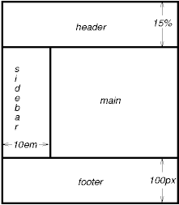 [D]
Этого можно добиться с помощью такого документа HTML и таблицы стилей:
<!DOCTYPE HTML PUBLIC "-//W3C//DTD HTML 4.0//EN">
<HTML>
<HEAD>
<TITLE>Документ с фрэймами в CSS2</TITLE>
<STYLE type="text/css">
BODY { height: 8.5in } /* Необходим далее для процентной высоты */
#header {
position: fixed;
width: 100%;
height: 15%;
top: 0;
right: 0;
bottom: auto;
left: 0;
}
#sidebar {
position: fixed;
width: 10em;
height: auto;
top: 15%;
right: auto;
bottom: 100px;
left: 0;
}
#main {
position: fixed;
width: auto;
height: auto;
top: 15%;
right: 0;
bottom: 100px;
left: 10em;
}
#footer {
position: fixed;
width: 100%;
height: 100px;
top: auto;
right: 0;
bottom: 0;
left: 0;
}
</STYLE>
</HEAD>
<BODY>
<DIV id="header"> ... </DIV>
<DIV id="sidebar"> ... </DIV>
<DIV id="main"> ... </DIV>
<DIV id="footer"> ... </DIV>
</BODY>
</HTML>
Три свойства, влияющие на генерацию и структуру бокса -- 'display', 'position' и 'float' -- взаимодействуют так:
Примечание. CSS2 не специфицирует поведение структуры, если значения этих свойств изменяются скриптами. Например, что произойдёт, если элемент, имеющий 'width: auto' изменит позицию? Будет ли перерисовано содержимое или форматирование останется первоначальным? Ответ находится за пределами данного документа, и похоже, что такое поведение отличалось для ранних реализаций CSS2.
Чтобы проиллюстрировать разницу между нормальным и относительным позиционированием, поплавками и абсолютным позиционированием, мы предлагаем серию примеров на базе следующего фрагмента HTML:
<!DOCTYPE HTML PUBLIC "-//W3C//DTD HTML 4.0//EN">
<HTML>
<HEAD>
<TITLE>Сравнение схем позиционирования</TITLE>
</HEAD>
<BODY>
<P>Beginning of body contents.
<SPAN id="outer"> Start of outer contents.
<SPAN id="inner"> Inner contents.</SPAN>
End of outer contents.</SPAN>
End of body contents.
</P>
</BODY>
</HTML>
Для этого документа мы принимаем следующие правила:
BODY { display: block; line-height: 200%;
width: 400px; height: 400px }
P { display: block }
SPAN { display: inline }
Окончательные позиции боксов, генерируемых внешними и внутренними элементами, различны в каждом примере. В каждой иллюстрации числа слева от иллюстрации обозначают позицию нормального позиционирования строк. (Примечание: иллюстрации используют различные горизонтальные и вертикальные масштабы.)
Рассмотрим следующие объявления CSS для outer и inner, которые не изменяют нормального расположения боксов:
#outer { color: red }
#inner { color: blue }
Элемент P содержит всё инлайн-содержимое: анонимный инлайн-текст и два элемента SPAN. Следовательно, всё содержимое будет расположено вне инлайн-контекста форматирования внутри содержащего блока, устанавливаемого элементом P, и получится что-то подобное:
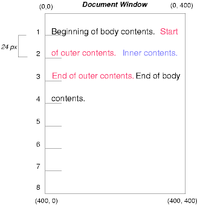 [D]
Чтобы увидеть действие относительного позиционирования, мы специфицируем:
#outer { position: relative; top: -12px; color: red }
#inner { position: relative; top: 12px; color: blue }
Текст расположен нормально до элемента outer. Текст outer затем всплывает в своей нормальной позиции и размерах в конце строки 1. Затем инлайн-боксы, содержащие текст (распределённый на три строки), сдвигаются вместе на '-12px' (вверх).
Содержание inner как дочернего от outer было бы нормально расположено сразу после слов "of outer contents" (на строке 1.5). Однако содержимое inner само смещено относительно содержимого outer на '12px' (вниз), обратно на свою первоначальную позицию на строке 2.
Обратите внимание, что на содержимое, следующее после outer, относительное позиционирование outer не влияет.
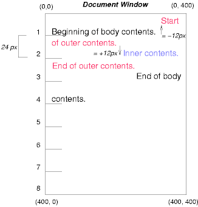 [D]
Заметьте также, что, имея смещение для outer '-24px', текст outer и текст тела могут быть перекрыты.
Теперь рассмотрим эффект от всплывания текста элемента inner вправо при использовании следующих правил:
#outer { color: red }
#inner { float: right; width: 130px; color: blue }
Текст нормально расположен до бокса inner, который вытолкнут из расположения и всплыл к правому полю (его 'width' установлено явно). Строчные боксы слева от поплавка укорочены, и оставшийся текст документа всплывает в них.
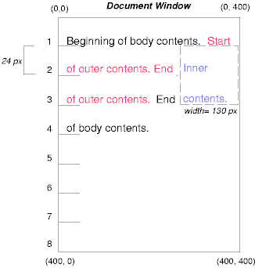 [D]
Чтобы увидеть действие свойства 'clear', мы добавим в пример родственные элементы:
<!DOCTYPE HTML PUBLIC "-//W3C//DTD HTML 4.0//EN">
<HTML>
<HEAD>
<TITLE>Сравнение схем позиционирования II</TITLE>
</HEAD>
<BODY>
<P>Beginning of body contents.
<SPAN id=outer> Start of outer contents.
<SPAN id=inner> Inner contents.</SPAN>
<SPAN id=sibling> Sibling contents.</SPAN>
End of outer contents.</SPAN>
End of body contents.
</P>
</BODY>
</HTML>
Следующие правила:
#inner { float: right; width: 130px; color: blue }
#sibling { color: red }
заставляют бокс inner всплывать вправо, как и раньше, а остальной текст документа - всплывать в незанятом пространстве:
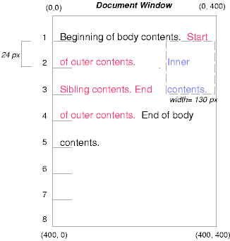 [D]
Однако, если свойство 'clear' родственного элемента установлено в 'right' (т.е. генерируемый родственный бокс не займёт позицию справа от всплывающего бокса), родственное содержимое начнёт располагаться ниже поплавка:
#inner { float: right; width: 130px; color: blue }
#sibling { clear: right; color: red }
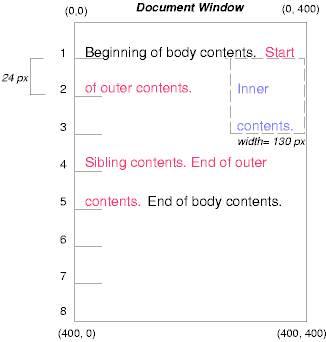 [D]
Наконец, мы рассмотрим действие абсолютного позиционирования. Вот объявления CSS для outer и inner:
#outer {
position: absolute;
top: 200px; left: 200px;
width: 200px;
color: red;
}
#inner { color: blue }
которые позиционируют верх бокса outer относительно его содержащего блока. Содержащий блок для позиционируемого бокса устанавливается ближайшим позиционированным предком (или, если таковой не существует, начальным содержащим блоком, как в нашем примере). Верхняя сторона бокса outer на '200px' ниже верха содержащего блока, а левая сторона - на '200px' от левой стороны. Дочерний бокс outer'а позиционирован нормально относительно родителя.
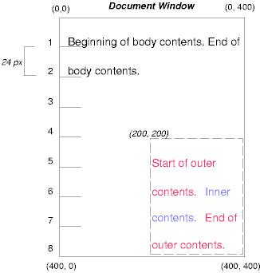 [D]
Следующий пример покажет абсолютно позиционированный бокс, являющийся дочерним от относительно позиционированного бокса. Хотя родительский бокс outer не имеет смещения, установка его свойства 'position' в 'relative' означает, что этот бокс может служить как содержащий блок для позиционированных потомков. Поскольку бокс outer это инлайн-бокс, разделённый на несколько строк, край верха первого инлайн-бокса и левый край (обозначенный толстой пунктирной линией на рисунке ниже) служат как ссылки для смещений 'top' и 'left'.
#outer {
position: relative;
color: red
}
#inner {
position: absolute;
top: 200px; left: -100px;
height: 130px; width: 130px;
color: blue;
}
В результате получится примерно так:
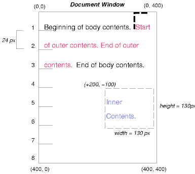 [D]
Если мы не позиционируем бокс outer:
#outer { color: red }
#inner {
position: absolute;
top: 200px; left: -100px;
height: 130px; width: 130px;
color: blue;
}
содержащий блок для inner станет начальным содержащим блоком (в нашем примере). Следующая иллюстрация показывает, где в этом случае окажется бокс inner.
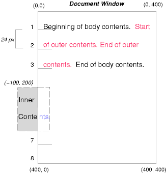 [D]
Относительное и абсолютное позиционирование может использоваться для выполнения смены баннеров, как показано в следующем примере. Такой документ:
<P style="position: relative; margin-right: 10px; left: 10px;"> I used two red hyphens to serve as a change bar. They will "float" to the left of the line containing THIS <SPAN style="position: absolute; top: auto; left: -1em; color: red;">--</SPAN> word.</P>
может дать в результате примерно это:
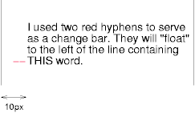 [D]
Сначала параграф (стороны содержащего блока которого показаны на иллюстрации) расположен нормально. Затем он смещается на '10px' от левого края содержащего блока (таким образом, правое поле в '10px' резервируется для предполагаемого смещения). Два дефиса, работающие как сменяющиеся баннеры, изымаются из расположения и позиционируются на текущей строке (поскольку 'top: auto'), на '-1em' от левого края своего содержащего блока (установленного P в свою окончательную позицию). В результате сменяющиеся баннеры "всплывают" слева от текущей строки.
В последующих разделах выражение "спереди от" означает ближе к пользователю, смотрящему на экран.
В CSS2 каждый бокс имеет позицию в трёх измерениях. В дополнение к позиции относительно вертикали и горизонтали, боксы расположены вдоль "z-axis/оси z" и форматируются один над другим. Позиции по оси z обычно рассматриваются, когда боксы перекрываются визуально. В этом разделе обсуждается, как боксы можно позиционировать относительно оси z.
Каждый бокс принадлежит к контексту стэка. Каждый бокс в данном контексте стэка имеет целочисленный уровень стэка, являющийся позицией бокса по оси z относительно других боксов того же самого контекста стэка. Боксы с большим уровнем стэка всегда форматируются перед боксами с меньшим уровнями стэка. Боксы могут иметь отрицательные значения уровня стэка. Боксы, имеющие тот же уровень в контексте стэка, упакованы снизу-вверх в соответствии с порядком дерева документа.
Корневой элемент создаёт корневой контекст стэка, но другие элементы могут устанавливать локальные контексты стэка. Контексты стэка наследуются. Локальный контекст стэка первичен; боксы других контекстов стэка не могут появляться между его боксами.
Элемент, устанавливающий локальный контекст стэка, генерирует бокс, который имеет два уровня стэка: один для контекста создаваемого стэка (всегда '0') и второй для контекста стэка, к которому он (бокс) принадлежит (задаваемый свойством 'z-index').
Бокс элемента имеет тот же уровень стэка, что и его бокс-родитель, если только не задан другой уровень стэка свойством 'z-index'.
| Значение: | auto | <integer> | inherit |
| Начальное: | auto |
| Применяется: | к позиционированным элементам |
| Наследуется: | нет |
| Процентное: | N/A |
| Носитель: | визуальный |
Для позиционированных боксов свойство 'z-index' специфицирует:
Значения имеют следующий смысл:
В следующем примере уровни стэка боксов (именованных своими атрибутами "id"): "text2"=0, "image"=1, "text3"=2 и "text1"=3. Уровень стэка для "text2" наследуется от корневого бокса. Остальные - специфицируются свойством 'z-index'.
<!DOCTYPE HTML PUBLIC "-//W3C//DTD HTML 4.0//EN">
<HTML>
<HEAD>
<TITLE>Z-позиционирование</TITLE>
<STYLE type="text/css">
.pile {
position: absolute;
left: 2in;
top: 2in;
width: 3in;
height: 3in;
}
</STYLE>
</HEAD>
<BODY>
<P>
<IMG id="image" class="pile"
src="butterfly.gif" alt="A butterfly image"
style="z-index: 1">
<DIV id="text1" class="pile"
style="z-index: 3">
This text will overlay the butterfly image.
</DIV>
<DIV id="text2">
This text will be beneath everything.
</DIV>
<DIV id="text3" class="pile"
style="z-index: 2">
This text will underlay text1, but overlay the butterfly image
</DIV>
</BODY>
</HTML>
Этот пример демонстрирует понятие прозрачности. Поведение по умолчанию бокса - позволять боксам, находящимся сзади, быть видимыми сквозь прозрачные области своего содержимого. В примере каждый бокс прозрачно накладывается на боксы ниже себя. Это поведение может быть переопределено путём использования одного из существующих свойств фона.
Символы в некоторых видах письма записываются справа налево. В некоторых документах, особенно на арабском и еврейском, и в некоторых контекстах смешивания языков текст в одиночном (визуально отображаемом) блоке может появляться со смешанным направлением письма. Этот феномен называется bidirectionality\двунаправленность, или сокращённо - "bidi".
Стандарт Unicode ([UNICODE], раздел 3.11) даёт сложный алгоритм определения направления текста. Этот алгоритм состоит из подразумеваемой части, базирующейся на свойствах символов, а также явной, контролирующей внедрения и переопределения. CSS2 обращается к этому алгоритму для достижения соответствующего двунаправленного отображения. Свойства 'direction' и 'unicode-bidi' позволяют авторам специфицировать, как элементы и атрибуты языка документа отображаются в этот алгоритм.
Если документ содержит символы справа-налево и если ПА отображает эти символы соответствующими глифами (а не произвольно замещающими, такими как знак кавычки, 16-ричный код, чёрный бокс и т.п.), то ПА обязан применять двунаправленный алгоритм. Это кажущееся односторонним требование отражает тот факт, что, хотя не каждый еврейский или арабский документ содержит текст разных направлений, велика вероятность того, что эти документы могут содержать текст слева-направо (например, числа, текст из других языков).
Поскольку направление текста зависит от структуры и семантики документа, эти свойства должны в большинстве случаев использоваться только дизайнерами описания типа документа (ОТД) или авторами специальных документов. Если таблица стилей по умолчанию специфицирует эти свойства, то авторы и пользователи не должны специфицировать правила для их переопределения. Типичным исключением будет переопределение bidi-поведения в ПА, если этот ПА производит транслитерацию идиша (обычно записанного буквами иврита) на латиницу по запросу пользователя.
Спецификация HTML 4.0 ([HTML40], раздел 8.2) определяет двунаправленное поведение для элементов HTML. Соответствующие HTML ПАгенты могут поэтому игнорировать свойства 'direction' и 'unicode-bidi' в авторских и пользовательских таблицах стилей. Правила таблиц стилей, которые необходимо применять для bidi-поведения и которые специфицированы в [HTML40], даны в примере таблицы стилей. Спецификация HTML 4.0 содержит также дополнительную информацию о вопросах двунаправленности.
| Значение: | ltr | rtl | inherit |
| Начальное: | ltr |
| Применяется: | ко всем элементам, но см. текст |
| Наследуется: | да |
| Процентное: | N/A |
| Носитель: | визуальный |
Это свойство специфицирует базовое направление письма блоков и направление внедрений и переопределений (см. 'unicode-bidi') для двунаправленного алгоритма Unicode. Дополнительно оно специфицирует направление для столбца таблицы, направление горизонтального переполнения и позицию неполной последней строки блока в том случае, если 'text-align: justify'.
Значения этого свойства имеют следующий смысл:
Чтобы свойство 'direction' работало в элементах инлайн-уровня, значение свойства 'unicode-bidi' обязано быть 'embed' или 'override'.
Примечание. Свойство 'direction', специфицированное для элементов столбца таблицы, не наследуется ячейками столбца, поскольку столбцы не существуют в дереве документа. Таким образом, CSS не может использовать правила наследования атрибута "dir", описанные в [HTML40], в разделе 11.3.2.1.
| Значение: | normal | embed | bidi-override | inherit |
| Начальное: | normal |
| Применяется: | ко всем элементам, но см. текст |
| Наследуется: | нет |
| Процентное: | N/A |
| Носитель: | визуальный |
Значения этого свойства имеют следующий смысл:
Окончательный порядок символов в каждом элементе уровня блока - такой, как если бы bidi-код управления был добавлен так, как описано выше, разметка была бы вырезана, а результирующая последовательность символов - передана в двунаправленный алгоритм Unicode в обычный текст, который производил бы те же самые разрывы строк, что и стилизованный текст. В этом процессе нетекстуальные объекты, такие как изображения, рассматриваются как нейтральные символы, если только их свойство 'unicode-bidi' не имеет значений, отличных от 'normal', тогда они рассматриваются как полужирные (strong) символы в 'direction', специфицированном для элемента.
Пожалуйста, обратите внимание, что, для того чтобы иметь возможность разместить инлайн-боксы в одном направлении (все слева-направо или все справа-налево), может понадобиться создание дополнительных инлайн-боксов (включая анонимные инлайн-боксы), и понадобится разделить и переупорядочить некоторые инлайн-боксы до размещения.
Поскольку алгоритм Unicode имеет предел - 15 уровней внедрения, лучше не использовать 'unicode-bidi' со значениями, отличными от 'normal', если отсутствуют подходящие. Значение 'inherit' должно использоваться особенно осторожно. Однако для элементов, которые обычно предполагается отображать как блоки, установка 'unicode-bidi: embed' предпочтительнее для удержания элементов вместе в том случае, когда дисплей изменяется на инлайн (см. пример ниже).
В следующем примере показан документ XML с двунаправленным текстом. Он иллюстрирует важный принцип дизайна: дизайнеры ОТД должны принимать в расчёт bidi и в собственно языке (элементы и атрибуты), и в сопровождающих таблицах стилей. Таблицы стилей должны быть разработаны так, чтобы правила bidi были отделены от других правил стиля. Правила bidi не должны переопределяться другими таблицами стилей, чтобы сохранить поведение bidi языка и ОТД.
Здесь буквы нижнего регистра присущи символам слева-направо, а буквы верхнего регистра - символам справа-налево:
<HEBREW> <PAR>HEBREW1 HEBREW2 english3 HEBREW4 HEBREW5</PAR> <PAR>HEBREW6 <EMPH>HEBREW7</EMPH> HEBREW8</PAR> </HEBREW> <ENGLISH> <PAR>english9 english10 english11 HEBREW12 HEBREW13</PAR> <PAR>english14 english15 english16</PAR> <PAR>english17 <HE-QUO>HEBREW18 english19 HEBREW20</HE-QUO></PAR> </ENGLISH>
Поскольку это - XML, таблица стилей отвечает
за направление письма.
Это таблица стилей:
/* Правила для bidi */
HEBREW, HE-QUO {direction: rtl; unicode-bidi: embed}
ENGLISH {direction: ltr; unicode-bidi: embed}
/* Правила для представления */
HEBREW, ENGLISH, PAR {display: block}
EMPH {font-weight: bold}
Элемент HEBREW это блок с базовым направлением справа-налево, элемент ENGLISH это блок с базовым направлением слева-направо. PARы - это блоки, наследующие базовое направление от своих родителей. Таким образом, первые два PARа готовы начаться справа сверху, а последние три готовы начаться слева сверху. Обратите внимание, пожалуйста, что HEBREW и ENGLISH выбраны как имена элементов лишь для ясности; обычно имена элементов должны относиться к структуре, без ссылок на языки.
Элемент EMPH - уровня инлайн, и, поскольку его значение для 'unicode-bidi' - 'normal' (начальное значение), он не оказывает воздействия на порядок расположения текста. Элемент HE-QUO, напротив, создаёт внедрение.
Если длина строки достаточно большая, форматирование текста может выглядеть примерно так:
5WERBEH 4WERBEH english3 2WERBEH 1WERBEH
8WERBEH 7WERBEH 6WERBEH
english9 english10 english11 13WERBEH 12WERBEH
english14 english15 english16
english17 20WERBEH english19 18WERBEH
Заметьте, что внедрение HE-QUO заставляет HEBREW18 находиться справа от english19.
Если строки должны быть разбиты, то выглядеть будет примерно так:
2WERBEH 1WERBEH
-EH 4WERBEH english3
5WERB
-EH 7WERBEH 6WERBEH
8WERB
english9 english10 en-
glish11 12WERBEH
13WERBEH
english14 english15
english16
english17 18WERBEH
20WERBEH english19
Поскольку HEBREW18 обязан быть прочитан до english19,
он находится в строке над english19. Простой
разрыв строки из предыдущего форматирования
не должен сработать.
Заметьте также, что первый слог из english19
может войти на предыдущую строку, но перенос
слов слева-направо в контекст справа-налево
и наоборот обычно подавляется, чтобы
исключить отображение знака переноса в
середине строки.